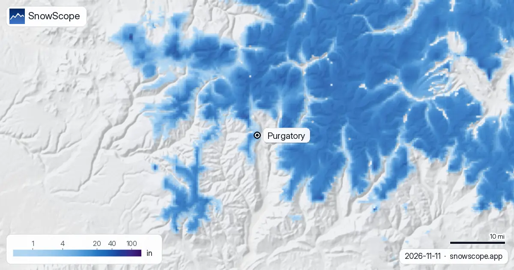
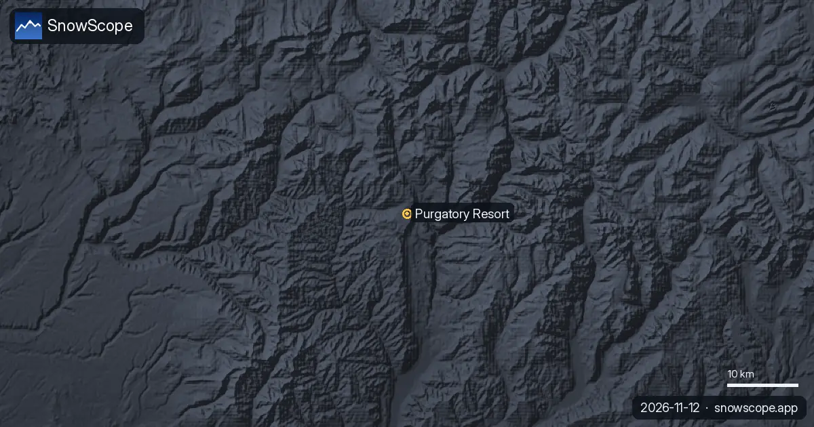

Purgatory, CO ski report: 3 in at the summit, 7 in on the way (12 November 2026)
Purgatory is waiting for its first real storm. On the 11 November model run the summit at 10,800 ft (3291 m) holds 3 in (7 cm), while mid-mountain at 9,800 ft (2993 m) and the base at 8,800 ft (2696 m) are bare. The past seven days were dry at all three heights; the next seven days bring 4 in (10 cm) at the base, 6 in (15 cm) at mid-mountain and 7 in (17 cm) at the summit.
See the live snow forecast for Purgatory in the SnowScope appSnow depth, powder alerts and the 3D map, free.
Today's numbers at Purgatory
Summit: 3 in (7 cm) on the ground, nothing new in the last week, 7 in (17 cm) forecast for the next seven days. Mid-mountain: 0 in, nothing new, 6 in (15 cm) coming. Base: 0 in, nothing new, 4 in (10 cm) coming.
These are model values for the area around the resort in the San Juan Mountains north of Durango, not the resort's own snow stake, and a forecast a week out can move a lot in either direction.
How November usually goes here
Purgatory starts slowly more often than not. Over our 46 past winters (1980-81 to 2025-26) the first snow usually lies on the summit by 8 October, at mid-mountain by 14 October and at the base by 27 October, but a usual November carries only 13 in (34 cm) at the summit, 9 in (24 cm) at mid-mountain and 5 in (13 cm) at the base.
December is when the base builds: 34 in (87 cm) at the summit, 26 in (66 cm) at mid-mountain and 16 in (41 cm) at the base in a middle winter.
What a full winter brings
The deepest month is March, with a usual 71 in (181 cm) at the summit. The peak of a middle winter reaches 48 in (122 cm) at the base, 68 in (173 cm) at mid-mountain and 81 in (206 cm) at the summit, and 12 weeks of the winter have 20 in (50 cm) or more at the summit in 9 of 10 past winters.
Last winter (2025-26) was a poor one here: 32 in (82 cm) at the summit, 25 in (64 cm) at mid-mountain and 16 in (41 cm) at the base, with 168 snow days at the summit against a usual 239. The long view is sobering too: the middle peak at the summit fell from 107 in (272 cm) in the first 15 of our winters to 80 in (204 cm) in the last 15.
Planning a Purgatory trip
The mapped area covers 42 mi (68 km) of runs and 14 lifts over about 2,000 ft (595 m) of vertical, so the summit numbers matter most in early season. Wait for the storm to land before booking a powder day, and remember that the resort, not our map, decides when the lifts open.

Tips for skiers
- Check the summit line after each model run: the first 7 in are forecast, not fallen.
- Early-season cover of a few inches hides rocks: keep to groomed runs once they open.
- For the backcountry around Durango, read the Colorado Avalanche Information Center forecast first.
More maps (external sites)
References and credits
- Purgatory Resort, official site (lifts, opening dates, snow stake) www.purgatory.ski/
- Colorado Avalanche Information Center, backcountry forecasts avalanche.state.co.us/
About these numbers
Snow numbers: the SnowScope snow model, run of 11 November 2026, at three heights of the resort (model values for the area, not the resort's snow stake), and our snow history, 46 past winters (1980-81 to 2025-26), a model of the past corrected for height. Inches and feet are rounded from the model's metric values. Run length and lift count: OpenSkiMap mapping. Forecasts change: look at the map before you go.
Official avalanche bulletins: Colorado Avalanche Information Center
Cite this report
For research, teaching or the press: the numbers and charts are free to reuse under CC BY 4.0 with this citation.
SnowScope (2026), Purgatory, CO ski report: 3 in at the summit, 7 in on the way (12 November 2026), https://snowscope.app/blog/en/2026/11/purgatory-co-ski-report-12-november-2026.html, accessed 2026-11-12
SnowScope (Atlas Labs). (2026, November 12). Purgatory, CO ski report: 3 in at the summit, 7 in on the way (12 November 2026). SnowScope snow reports. https://snowscope.app/blog/en/2026/11/purgatory-co-ski-report-12-november-2026.html
BibTeX
@misc{snowscope2026purgatorycoskireport12no,
author = {{SnowScope (Atlas Labs)}},
title = {Purgatory, CO ski report: 3 in at the summit, 7 in on the way (12 November 2026)},
year = {2026},
month = nov,
howpublished = {\url{https://snowscope.app/blog/en/2026/11/purgatory-co-ski-report-12-november-2026.html}},
note = {Published 2026-11-12 14:19 UTC; accessed 2026-11-12}
}· CC BY 4.0 · Methods, data and tools →
Purgatory: snow and temperature by height, this winter vs last (tools) →
Follow Purgatory
Free: a message when fresh snow is coming, and the forecast every morning.